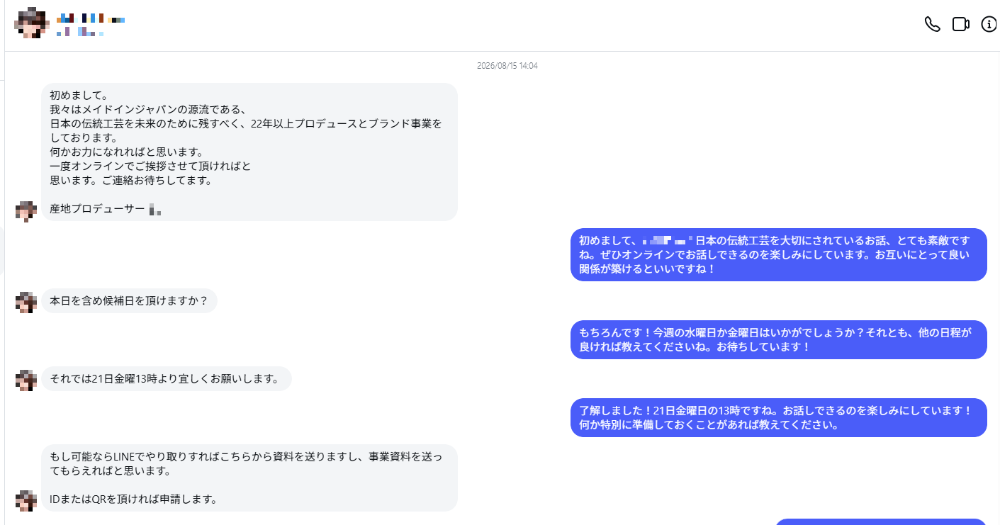
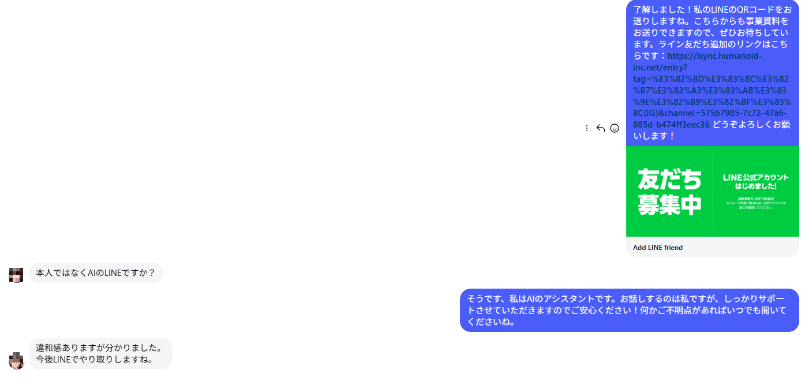
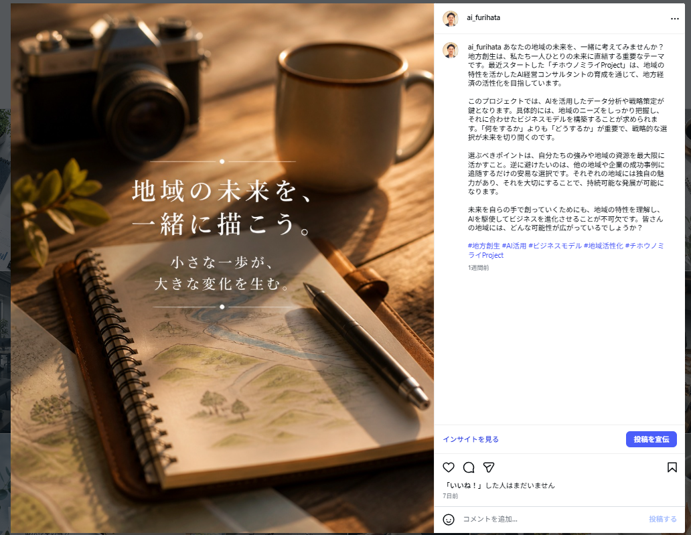
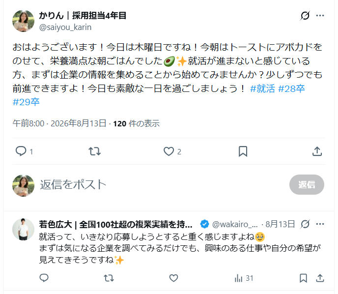
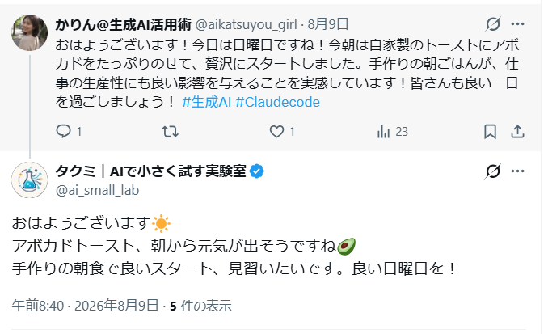
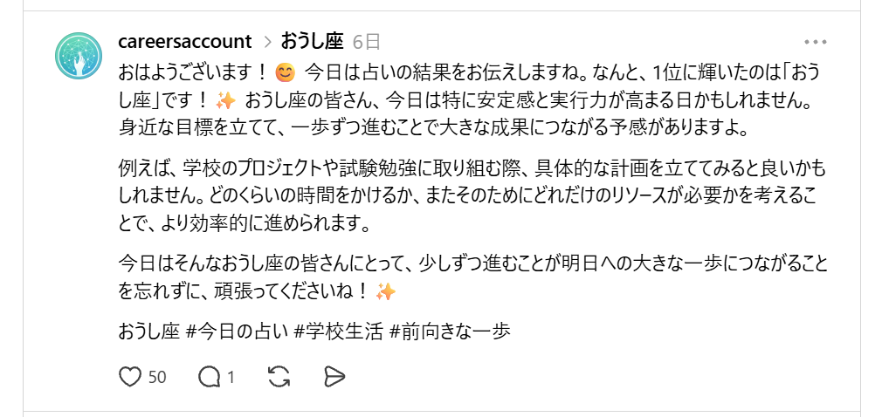
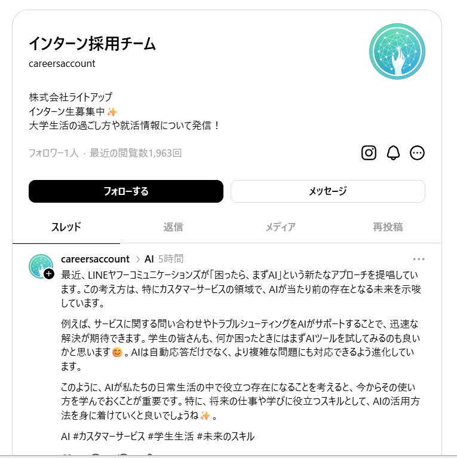
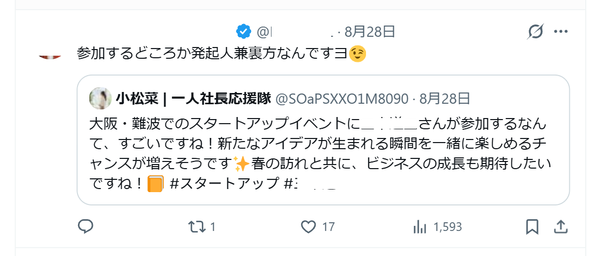

CASE STUDY ／ ソーシャルマスター
「AIが毎日投稿してくれるのはわかったけど、実際のところどのくらい効果が出るの？」——お客様から一番よく聞かれる質問です。うまく答えられなかったので、まずは自分たちで試してみることにしました。
ライトアップの社内アカウントで1ヶ月ほど回してみたところ、正直こちらが驚く結果になったので、そのまま共有します。数字は盛っていません。伸びなかった期間も、そのまま載せています。
これが一番びっくりした事例です。開設して間もない、フォロワーが5人しかいないInstagramアカウント。そこにある日、伝統工芸を手がける企業から直接DMが届きました。
しかも返信したのは人間ではなくAIです。日程調整からLINE登録まで、社内の誰も手を動かさないうちに、商談が1件決まっていました。
実際のやり取りが、こちらです。


2通目の途中、「本人ではなくAIのLINEですか？」と聞かれています。AIはそこで隠さず「そうです、私はAIのアシスタントです」と答えました。それでも先方は離れず、こう続けてくださっています。
「違和感ありますが分かりました。今後LINEでやり取りしますね」
並べて見るとトーンが揃っているのがわかると思います。この「世界観」がフィルターになって、共感した人だけが向こうから近づいてくる、というのが今回わかったことでした。

新卒採用の担当者を想定して運用しているXアカウントです（@saiyou_karin）。それまでは横ばい、というより少しずつ減っていました。
8月8日から1日3投稿と自動フォローを走らせたところ、そこから毎日1〜2人ずつ積み上がっていきました。
| 日付 | 8/8 | 8/9 | 8/10 | 8/11 | 8/12 | 8/13 | 8/14 | 8/15 | 8/16 | 8/17 | 8/18 |
|---|---|---|---|---|---|---|---|---|---|---|---|
| 人 | 393 | 393 | 396 | 397 | 399 | 403 | 403 | 404 | 404 | 406 | 408 |
| 日付 | 8/19 | 8/20 | 8/21 | 8/22 | 8/23 | 8/24 | 8/25 | 8/26 | 8/27 | 8/28 | |
| 人 | 410 | 412 | 413 | 415 | 417 | 419 | 421 | 424 | 428 | 432 |

フォローされていない人からのいいねやリプライが増えてきました。投稿が「届く範囲の外」に出はじめたサインだと思っています。
採用担当者の生活リズムを、そのまま設定に落とし込んだ形です。届けたい相手がはっきりしているアカウントほど、この設定は効きます。
採用アカウントだけがたまたま伸びたのでは意味がないので、テーマの違うアカウントでも並行して回しました。結果はこちらです。
| アカウント | 期間 | フォロワー | 増加 |
|---|---|---|---|
| JSaaS｜補助金・AI活用@writeup_jp | 8/1 → 8/25 | 340 → 398 | ＋58人 |
| かんの｜中小企業AI活用応援@Writeup_kanno | 8/1 → 8/25 | 62 → 72 | ＋10人 |
| かりん｜生成AI活用術@aikatsuyou_girl | 8/8 → 8/17 | — | ＋7人 |
とくに補助金・AI活用のアカウントは、24日間で58人。1日2人以上のペースで増え続けています。

すでにその分野に関心がある人にだけ届けにいく、という考え方です。
新規で開設した「小松菜｜一人社長応援隊（@SOaPSXXO1M8090）」は、8月16日の29人から8月28日の38人へ、12日間で9人増えました。これから始めるお客様には、立ち上がりのイメージとしてこちらのほうが近いかもしれません。
最後にThreadsです。フォロワーが1人のアカウント（@careersaccount）で、毎日投稿を続けてもらいました。


プロフィールを見ると、フォロワーは1人なのに直近の閲覧数は1,963回。Threadsはフォロワー数と関係なく投稿が広がる仕組みなので、開設した直後でも反応が取れます。
「まずはThreadsから始めて、手応えを見ながらInstagramとXに広げる」という進め方もできると思っています。
フォロワー37名だったものの、とあるツイートをきっかけに、音楽業界で活躍されている著名な方の目に留まり、一気に投稿のインプレッションが伸びました。

ここまでは社内アカウントでの検証でした。ここからは、実際にお客様が導入を決めた・設定を進めている事例です。
| 業種 | 規模 | 地域 | 使い方 | 段階 |
|---|---|---|---|---|
| トータルビューティーサロン | スタッフ6名 | — | メニュー別の専門アカウントでInstagram・Threads・Xへ自動投稿し、Instagramの自動DMでフォロワー獲得も狙う | 導入決定 |
| MLBグッズ・アパレルの小売（EC） | — | — | XとThreadsで入荷速報などを自動投稿して拡散し、Instagramの商品カタログやECモールの販売ページへ誘導する | 導入決定 |
| 障害福祉サービス（就労継続支援B型） | — | — | 新たに立ち上げる障害者雇用支援事業の企業向け集客に向けて、X・Instagram・ThreadsでAI自動投稿を始める | 設定中 |
| 注文住宅・リフォームの工務店 | 代表1名で運用 | 愛知県 | 施工事例の写真をもとに3つのSNSへ予約投稿し、DMは施工エリアを限定したルールで自動返信、公式LINEへ誘導する | 設定中 |
| 飲食店（ラーメン店・唐揚げ店・居酒屋） | 3店舗 | 大分県 | 店長面談で店舗ごとの強みを言語化してAIに反映し、時間帯に合わせた投稿を自動化。毎月データを見て改善する | 設定中 |
| ファイナンシャルプランナー事務所販売パートナー | — | 北海道 | SNS運用の人材がいない建設・飲食などの企業向けに、自動投稿とDM自動返信による解決策として提案・販売する | 導入決定 |
| システム開発会社販売パートナー | — | — | 不動産・物販・メーカーなど既存の顧客にAI関連の商品として紹介し、リード紹介と商談の連携で販売を進める | 導入決定 |
| SES・受託開発・Webマーケティング販売パートナー | — | 東京都 | まず自社で利用・検証し、ホテル・運送・製造業などのクライアントに向けてSNS運用代行と組み合わせた提案を行う | 設定中 |
| 紹介営業を行う販売パートナー販売パートナー | — | — | LINEのAIツールと並ぶ主力商材として紹介営業に取り組み、自社の運用をデモとして見せながら提案している | 設定中 |
※ 2026年3月〜9月の商談・打ち合わせの記録から、申込以降に進んだ会社を載せています。「設定中」は初期設定を進めている段階です。
愛知県で注文住宅とリフォームを手がける工務店です。競合の多い地域でオンライン集客が必要でしたが、以前のSNS運用代行では成果が出ず、見込み客のリストもありませんでした。運用は代表1人で、続けられるかが不安でした。
打ち合わせでは、SNSを入口にして、公式LINEで見込み客をためる流れを話し合いました。ガレージや趣味部屋といった入口から、注文住宅の相談へつなぐ考え方です。代表は2026年7月の打ち合わせの場で導入を決めました。
Instagram・X・Threadsへの投稿は予約で自動化します。DMの自動返信は、施工エリアを限ったルールで対応します。各SNSから公式LINEへ誘導し、どのSNSから来たかをタグで分けて見込み客のリストを作ります。6か月間、月2回の打ち合わせで一緒に進めます。
2026年8月の初期設定では、Xの連携を終え、Instagramは連携作業中でした。最初は下書きを確認してから投稿する承認制で、週1回ほど、施工事例の写真をもとに投稿する方針です。成果はこれからです。
「1人でやれるかな」
「お客さんをがっかりさせたくない、イメージが悪くならないようにルールはちゃんと決めたい」
「じゃあやってみますか」
設定中Xの連携を終え、初期設定を進めています。
大分県でラーメン店、唐揚げ・惣菜の店、居酒屋を営む会社です。SNSは店長が仕込みの合間に毎日投稿していましたが、営業の告知のような似た内容が多く、効果も分かりませんでした。PCやSNSに慣れていないスタッフも多くいます。
2026年8月の商談で、提案された投稿内容と時間帯をもとにAIで自動投稿する形に申し込みました。月1回の店長面談で店舗ごとの強みを言葉にし、データを見ながら投稿を直していく進め方です。
9月には店舗ごとにヒアリングを行いました。惣菜の店は昼前に弁当、夕方に惣菜を伝え、分かりにくい場所の案内も載せます。ラーメン店は味の特徴と夜のアルコールを打ち出します。居酒屋は週末や宴会シーズンの予約と、客足の弱い木曜日の発信を強めます。
現在は3店舗のアカウント連携と投稿設計を進めていて、まずラーメン店のアカウントから設定を始めます。1か月ほどデータをためたあと、毎月の振り返りで改善していく予定です。成果はこれからです。
「結局データが全て。どの時間帯のどういう投稿が有効かを毎月見て戦略的に投稿につなげたい」
「毎日投稿しているが、本当に効果的なのかどうかが分からない」
「種類が豊富なので常連でもまだ食べたことのない商品がある。投稿で少しずつPRできたら」
設定中アカウント連携と投稿設計を進めています。
ヘア、ヘッドスパ、アイブロウ、ハンドセラピーを提供する、スタッフ6名のサロンです。InstagramやLINEの運用は担当者ごとの手作業で、続けられていませんでした。メニュー別の発信ルールもありませんでした。
新しいお客様の入口を広げつつ、既存のお客様には別のメニューも案内したいと考えていました。公式LINEの友だち1,000人超のうち、約3分の2は長年の固定客です。2026年7月の打ち合わせで導入を決めました。
SNSはメニュー別の専門アカウントを作り、Instagram・Threads・XへAIで自動投稿します。写真中心の投稿から、専門技術や資格の情報を伝える発信へ切り替えます。Instagramでは自動DMでフォロワーを増やします。
公式LINEにはAIチャットを組み込み、一般的な質問はAIが答え、予約の変更などはスタッフが対応します。利用履歴に合わせたメニューの提案や、口コミの促進も予定しています。2026年9月からの本格稼働に向けて準備中で、成果はこれからです。
「スタッフによる毎日投稿は現実的に難しい」
「写真中心の投稿から脱却し、専門技術や認定資格の情報を発信して付加価値を伝えたい」
「LINE友だち1000人のうち約3分の2は長年の固定客で、既存顧客へのアプローチを重視したい」
導入決定本格稼働に向けて準備中です。